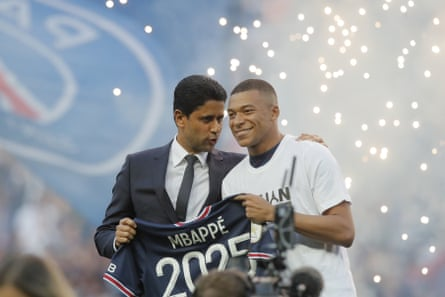
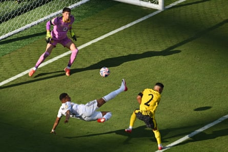

T his is a tale of blackmail and revenge, or so it goes. Of power and money, lots of money. It is also a story of sport. The buildup to the semi-final of the Club World Cup between Paris Saint-Germain and Real Madrid, those two empires and enemies, didn’t begin with a fitness update from Atlanta or Palm Beach; it began on Monday morning New York time with news from Paris that Kylian Mbappé had withdrawn a legal claim accusing his former club of extortion and harassment. Two days before kick-off, it was time for the football.
Well, sort of. “The Real Madrid striker and his entourage want to calm the situation and concentrate exclusively on sporting issues,” L’Équipe reported. Definitely nothing to do with their prospects of winning the case, then. Besides, there is still the demand for €55m in allegedly unpaid wages and bonuses , which led to PSG’s accounts being momentarily blocked. PSG claim Mbappé agreed to waive the €55m when he went and the club have made a counter-claim of €98m. The accusations and counter-accusations are multiple, the amounts eye-watering, the bitterness inescapable even as it is hidden behind a polite exterior.
Revenge is a dish best served cold and a word overused in football, and Mbappé and PSG were always going to cross paths one day, but this time it actually applies. There is history, scores to settle. “I have been at PSG a long time,” Mbappé said when he left for Madrid 13 months ago. Seven years he had spent in Paris; for almost all of them, Madrid cast a shadow. In 2021 PSG fans booed him because they thought he was going to Madrid. In 2022 Madrid fans were equally angry because they found out he wasn’t. In 2023 Le Parisien said he was going again, and he called them liars. In 2024, he finally did.
His future became a question of state, the pressure intense and applied from the Élysée Palace and from Doha. “It wasn’t an easy situation; I wouldn’t want anyone to go through that,” he would say. When Mbappé extended his contract at PSG for the last time in 2022, there was an €180m renewal payment, a salary of €72m a year and annual, increasing loyalty bonuses, starting at €70m. That he was not convinced, maybe even that he had been coerced, or perhaps that he had played them, rapidly became apparent: this wasn’t a three-year deal but two plus one and he had barely signed it when he informed them that he wouldn’t be extending.
PSG left him training with the reserves , sat him in the stand and tried to sell him while they could still get a fee. Madrid, though, didn’t move and he resisted the threats and played again. Once he was allowed back into the fold, had talked publicly about an agreement with Nasser al-Khelaifi that would protect both parties, no matter what happened. PSG’s president, meanwhile, said Mbappé would never go for free. But he left for free. In his goodbye statement, he did not mention Khelaifi.
Nasser Al-Khelaifi and Kylian Mbappé in 2022 with the PSG 2025 shirt that did not tell the full story.Photograph: Michel Spingler/AP
PSG had lost. And then they won. The day Mbappé left, it felt like a liberation. As it turned out, PSG were liberated too. On the morning before their Club World Cup quarter-final against Bayern Munich last week, Khelaifi talked about a culture shift, about how there are “23, 24 warriors” now, the unlike before going without saying; about how these days the star is the team, and it is the best team he has had. If it seems a bit rich to be presumptuous about that, to take pride in it as if it was a plan, when the hierarchy did all they could to keep Mbappé in Paris, it is true.
At the end of the season, an old Marca cover from one of PSG’s European eliminations was inevitably dug out again, showing the France forward with the headline: “If you want to win the Champions League, you know what you have to do.” So he did … and PSG won it instead. The equation Mbappé leaves = PSG win is too simple, too reductionist, yet it is hard to resist. He had left PSG, the team that just couldn’t win the competition to go to the club that always seems to so that he would. Madrid were eliminated in the quarter-finals and PSG had won it. Mbappé’s legal team had wanted Uefa to consider whether PSG should be allowed to participate in light of the €55m claim.
Mbappé is PSG’s all time top scorer, with 256 goals. At Madrid he got a hat-trick in the clásico in May, another against Manchester City in the Champions League, and scored in the Copa del Rey final. He has scored 44 goals: no debutant ever got more. How can you not call him a success? How could you blame him for the shift in fortunes? And yet that clásico was lost , the Champions League ended the next round, and in the cup final Madrid were defeated too.
Halfway through the season he said he had hit “rock bottom”; “it a mental thing,” he said , describing missed penalties against Liverpool and Athletic as “a good moment [that] changed my mentality. I couldn’t do worse: I could only go upwards. I had to do more. It was a moment of: bam! , change everything. I didn’t come to Madrid to play badly”. By then, though, it was late and the collective malaise was irreversible.
In the meantime, the battles with PSG continued off the field, no clean break, no closure, despite the liberation. Instead, the bitterness lingered. When Mbappé’s claim was made public in April, his lawyers declared it “time to go on the attack” having tried to “resolve things peacefully”, seeking the what they said he was owed: the behaviour had been “scandalous and indecent” and they wanted “to send a clear message: that’s enough.” A PSG spokesperson told Efe those claims were “a fantasy from a parallel universe”. It was they who were seeking damages.
Damage? As it turned out, his departure had done them good. They won the Champions League and have in Ousmane Dembélé the leading candidate to win the Ballon d’Or, which Mbappé had gone in search of too. “When a player like me comes to a team, many things change,” Mbappé had said, and not all of them were for the better. Madrid, winners of the league and Champions League without Mbappé, won nothing with him. And if was unfair, even absurd, for him to become a symbol of Madrid’s failure and PSG’s success, at the end of the season, as a relentless PSG team tore Inter apart, some analyses suggested that was so.
One particular scene from No Tenéis Ni Puta Idea , a superb insider documentary on Luis Enrique from Mbappé’s final season, offered an explanation of what had happened. In it, the PSG coach sits Mbappé in front of a screen at PSG’s training ground and asks him to complete the caption describing his previous performance: C’est … something. The missing word is catastrophique . He tries to get through to Mbappé by talking about his his hero, the NBA legend Michael Jordan: a player who “would grab his teammates by the balls and run to defend like a mother fucker”.
That , Luis Enrique insists, is a leader. “As an attacker you’re God, I know, a phenomenon, top ,” he says, “but that’s not what I care about. If you press, it’s the business. If on top of that, you get Dembélé, [Randal] Kolo Muani, Marcos Asencio to press, you know what we have? A team that’s a fucking machine. And that’s when you’re Michael Jordan.”
Luis Enrique tells his striker: “I want you to leave through the front door, Kiki, but you have to earn that.” Towards the end of the series, by which time everyone else knows Mbappé is leaving and they fear the worst, when they have been denied in their pursuit of the Champions League once more, there is a moment when the coach says: “Next year we’ll be better, without doubt, because when a player goes where he wants that means there are parts of our play that I don’t control. And next year I am going to control all of them. Without exception.” And so it was, an extra dimension added to PSG’s Champions League win by his absence and, while they wouldn’t say so, their former forward winning nothing, the schadenfreude inescapable.
Kylian Mbappé said his acrobatic goal against Borussia Dortmund was a ‘good way of showing I feel good again’ after a stomach virus.Photograph: Angela Weiss/AFP/Getty Images
The Club World Cup offers a way back for Madrid and Mbappé, perhaps, one competition left, one shot at redemption, this season at least. Yet while something has been building again under the new coach, Xabi Alonso, it has been without Mbappé so far. After being in hospital with a stomach virus and losing 5kg, he has not started; in his place, Gonzalo García, a 21-year-old academy striker, has been a revelation. Against Dortmund , though, Mbappé came on and scored a brilliant acrobatic volley. “A good way of showing I feel good again,” he called it; the following day he withdrew his accusation of extortion, but revenge is another matter, ready to start at last just in time to meet PSG, a place in a world cup final at stake.
“We were lucky this year without [Mbappé], but I also wish him the best,” Khelaifi said just before this competition began, as if anyone was buying that. “Even if we have a small conflict, honestly, from the bottom of my heart, I wish him the best. “Except,” the PSG president added, “when he plays us.”